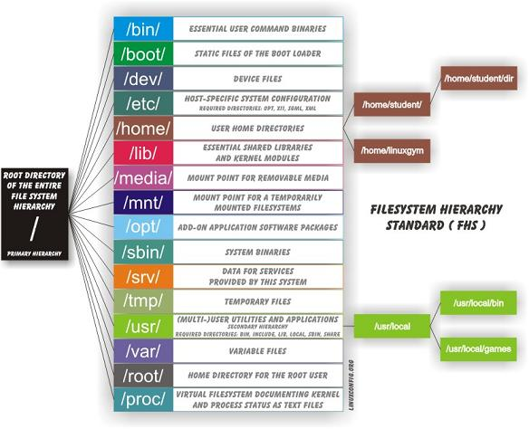

Unterscheidung von gross / klein -Schreibung: Datei.txt ≠ datei.txt
Benutzerverzeichnis : /home/username
Wurzelverzeichnis „root directory“ :/
gültige Dateinamen / Pfade:
/home/daniel/Dokumente/Wichtig.dez-2018.ods
WichtigerText
dies.darf_Nicht.weg
README
Basics / Unterschiede zu Windows
versteckte Datei/Ordner beginnt mit . : .config
Datei-Endungen nicht vorgeschrieben
Keine Laufwerksbuchstaben
Laufwerke ( DVD, USB etc ) werden im Verzeichnisbaum „eingehängt” : mount
Alles ist eine Datei !
Verzeichnisse
Symbolische Links ähnlich zu »Verknüpfungen« unter Windows.
Gerätedateien (engl. devices): Schnittstellen zu beliebigen Geräten wie Laufwerken. /dev/fd0 ist das erste Diskettenlaufwerk.

Übungen
Wie werden versteckte Dateien Sichtbar?
Einbinden eines USB Stick
Installation von XFCE
Wechsel der Desktop Umgebung zu xfce
Paketverwaltung
Debian Versions-Bezeichungen
4 Stränge, benannt nach Figuren aus Toy Story
Testing ( Buster - wird Debian 10)
Unstable ( heisst immer Sid )
Stable ( stretch - Debian 9 )
Oldstable ( Jessie - Debian 8 )
Programme zum Paketmanagement
synaptic - point and click
apt-get - kann Abhängigkeiten selbständig auflösen
apt - das hübschere apt-get
dpkg - low level paket management
apt
update
Neueinlesen der Paketlisten
upgrade
Installierte Pakete wenn möglich auf eine verbesserte Version aktualisieren. Um geänderte Abhängigkeiten zu erfüllen, werden gegebenenfalls auch neue Pakete installiert.
full-upgrade
Wie upgrade, nur können bei dem Vorgang auch Pakete entfernt werden. Alternativ kann statt full-upgrade auch der Befehl dist-upgrade verwendet werden. Das Ergebnis ist identisch, allerdings ist dist-upgrade in der Hilfe und der Man-Page von apt nicht dokumentiert.
install PAKETNAME
installiert das Paket PAKETNAME
install /PFAD/ZUM/PAKET
installiert ein lokales Paket und dessen Abhängigkeiten
remove PAKETNAME
deinstalliert das Paket PAKETNAME
purge PAKETNAME
wie remove, es werden aber zusätzlich auch alle Konfigurationsdateien gelöscht
autoremove
deinstalliert alle automatisch installierten Pakete, die nicht mehr benötigt werden und keine Abhängigkeiten mehr zu anderen Paketen haben
Quelle: https://wiki.ubuntuusers.de/apt/apt/
Andere Distros
RedHat / CentOs : rpm ( *.rpm )
YUM
arch: pacman ( *.pkg.tar.xz )
Kovertierung möglich mit alien
NICHT MISCHEN!!
Nachteile:
Häufige Updates
grosse Downlods bei Updates
ältere Distris manchmal nicht mit neuen Programmen kompatibel
Jetzt Neu!
snappy ( ubuntu )
flatpack
Lösen das Problem der unterschiedlichen Abhängigkeiten und Versionen je nach Distro
Manche Programme sind nicht als Paket verfügbar. Installation von Hand möglich.
programm.tar.gz
-> tar : tape archive
-> gz : zip ( gzip )
gezippter container
nachteil: umgeht Paketverwaltung
Übungen
Im Terminal
Update des Systems mit apt
Upgrade des Systems mit apt
Liste alle installierten Paketen
Welches sind die momentan aktiven repositories?
Halp!!
sudo apt update
sudo apt upgrade
apt list
dpkg --list
less /etc/apt/source.list
deb http://ftp.uni-stuttgart.de/debian/ stretch main contrib non-free
deb-src http://ftp.uni-stuttgart.de/debian/ stretch main contrib non-free
Types: deb
URIs: http://ftp.uni-stuttgart.de/debian/
Suites: stretch
Components: main contrib non-free
Das Hilfesystem
Wie finde ich Hilfe??
Man muss nicht alles wissen, aber man sollte wissen wo ma n es nachschlagen kann.
Im Internet ;-)
www.debian.org/doc/
wiki.ubuntuusers.de
The Linux Documentaion Project - http://tldp.org/
<F1> ( nicht im Terminal )
Ausserdem:::
Die man - Pages
Für (fast) alle Terminal-Programme existiert eine man - Page
man sudo
In Linux-Literatur oder auch in den Manpages selbst ist häufig eine man-Nummer hinter dem Kommando angegeben, z.B. less(1), damit der man-Text zielgenau aufgerufen werden kann. Es gibt die Themenbereiche 1 bis 9 und n.
Benutzerkommandos
Systemaufruf
Funktionen der Programmiersprache C
Dateiformate
Konfigurationsdateien
Spiele
Diverses
Kommandos zur Systemadministrati
Kernelfunktionen
Die Eingabe für den Aufruf von less mit dem Thema (1) sieht so aus:
man 1 less
Die Tastenkürzel
Taste
Bedeutung
Taste
Bedeutung
↑ oder
Y
im Text nach oben scrollen
↓ oder
E
im Text nach unten scrollen
←
im Text nach links scrollen
→
im Text nach rechts scrollen
Bild ↑ oder
U oder
B
im Text seitenweise nach oben scrollen
Bild ↓ oder
D oder
F
im Text seitenweise nach unten scrollen
G
zum Textanfang springen
⇧ +
G
zum Textende springen
⇧ +
7
in den Suchmodus "Vorwärtssuche"
⇧ +
ß
in den Suchmodus "Rückwärtssuche"
N
zum nächsten Suchresultat springen
⇧ +
N
zum vorherigen Suchresultat springen
H
Hilfetext mit vielen zusätzlichen Tasten und Optionen